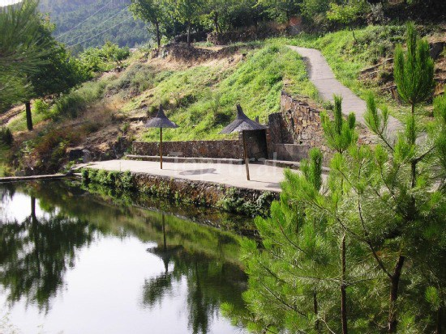
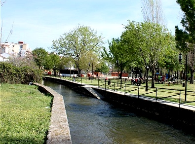
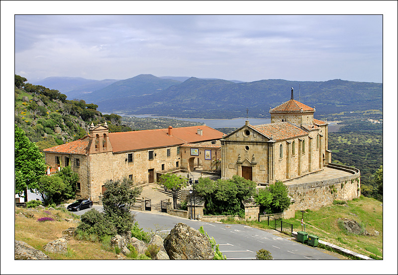
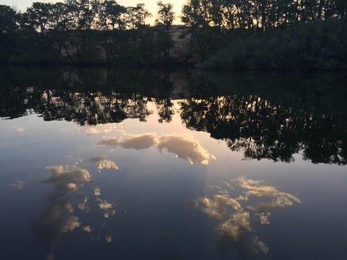

Our activities!
We offer a bunch of activities you may enjoy. As Castillo's might be limited, we also have added some in Plasencia (the nearest big city).

Swimming!
In the summer a little barrage is prepared in the village’s river (río Esperaban) to make a big swimming pool that you mustn’t miss.
The water is mild tempered and it hasn’t any chlorine at all.
You can suntan if you want, be careful with sunburning. It is a perfect place to spend the hottest hours of the day.
Go for a walk!
Are you ready to get lost in the forest? Don't worry, the paths are clear and it's really difficult to lost the track!

Parque de la isla
Visit The Island’s park in Plasencia. Near the Jerte there is a beautiful park. In summer it is mild tempered because of the high trees and the river. Here you can swim in a free swimming pool in the river’s water. You have a couple of places to have a drink or some food if you want.
Ermita de la virgen del puerto
I recommend you this place because from there you can see a spectacular view of the city and its surroundings. You must drive to a little church (or walk if you dare), beyond Plasencia’s hospital, and you can park in a parking site nearby.
Then you can walk on a lane surrounded by several cork trees, seeing at the bottom of the valley at your left (the West, because you are walking to the North) the highway to Salamanca. Some people take their Sunday meal and eat in the country. You can do the same.
La Chopera
If you take the road of the valley (that goes up along the river Jerte towards Ávila), driving just 2 km from Plasencia, you’ll find, at the left, a nice place near the river with a camping site and a restaurant where you can take your dinner if you want. I love swimming in this place, although the water is rather cold.
I like going in the afternoon before sunset, because I think at this time the water is not so cold. You can recommend your friends this camping site (Camping La Chopera). I like it very much.